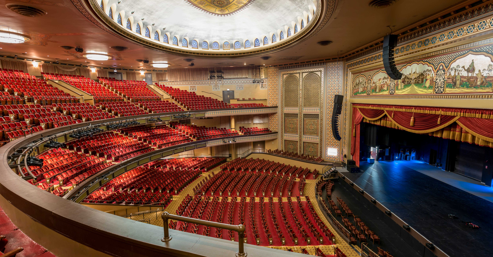

Founded in 1737, Richmond is a city brimming with history and culture. But like any great city Richmond is not without its flaws. Dispite it's blemished history, the present city strives to be inclusive in its celebration of its community.
No better example of this exists than the statue of Arther Ashe, located at the end of Monument Avenue-- The street where all the confederate soldier statues are located. When the statue was erected in the 1990's citizens debated weater or not the location of a Black icon should reside next to confederate civil war soldiers. In the end the city chose to confront the past, with the inclusion of the present.
Culture

Altria Theatre
A theater at the southwest corner of Monroe Park, the largest venue of Richmond CenterStage's performing arts complex. Formerly known as The Mosque and the Landmark Theater, the Altria Theater was originally built for Shriners of the
Acca Temple Shrine.

William Byrd Park
A public park located in Richmond, Virginia, north of the James River and adjacent to Maymont. The 200-acre (0.81 km2) park includes a mile-long trail with exercise stops, monuments, an amphitheatre, and three small lakes: Shields, Swan, and Boat Lake. Boat Lake has a lighted fountain at its center. Visitors can rent pedal boats there in season. The park includes tennis courts, Little League baseball fields, and a children's playground. The historic round house[1] and Poplar Vale Cemetery are also located in the park. The park was listed on the National Register of Historic Places in 2016.
Source
William Byrd Park
A public park located in Richmond, Virginia, north of the James River and adjacent to Maymont. The 200-acre (0.81 km2) park includes a mile-long trail with exercise stops, monuments, an amphitheatre, and three small lakes: Shields, Swan, and Boat Lake. Boat Lake has a lighted fountain at its center. Visitors can rent pedal boats there in season. The park includes tennis courts, Little League baseball fields, and a children's playground. The historic round house[1] and Poplar Vale Cemetery are also located in the park. The park was listed on the National Register of Historic Places in 2016.
Source
Dogwood Dell
The 2,400 seat amphitheatre owned and operated by the Department of Parks, Recreation & Community Facilities and located in Byrd Park. Since 1956, it has been home to the Festival of Arts; a summer long celebration of the arts featuring art exhibits, concerts, dance and theatre. In addition to these events, the Festival of Arts also incorporates a children's series with performances at our Ha' Penny stage.
Source
Richmond Folk
Festival
One of Virginia's largest events, drawing visitors from all over the country to downtown Richmond's historic riverfront. The Festival is a FREE three-day event that got its start as the National Council for the Traditional Arts’ National Folk Festival, held in Richmond from 2005-2007. The Richmond Folk Festival features performing groups representing a diverse array of cultural traditions on seven stages.
Source
Gallery 5
Gallery5 is an award-winning, community-motivated visual and performing art center that has become a premier arts venue for local and regional audiences. Through extensive collaboration with cultural, educational, environmental and social organizations, Gallery5 continues to broaden demographics by encouraging a more diverse, inclusive, and inspired region of art supporters.
Source
Science Museum of Virginia
The Museum features permanent hands-on exhibits about wellness, innovation and speed—to name a few—and hosts touring exhibitions from around the world. At 76 feet, The Dome theater is the largest screen in Virginia and provides guests with the ultimate "you are there" experience. The Museum also hosts hundreds of special events throughout the year, such as overnight adventures, talks and summer camps.
Source
Virginia Museum of Fine Arts
VMFA is a state-supported, privately endowed educational institution created for the benefit of the citizens of the Commonwealth of Virginia. Its purpose is to collect, preserve, exhibit, and interpret art, to encourage the study of the arts, and thus to enrich the lives of all.
Source